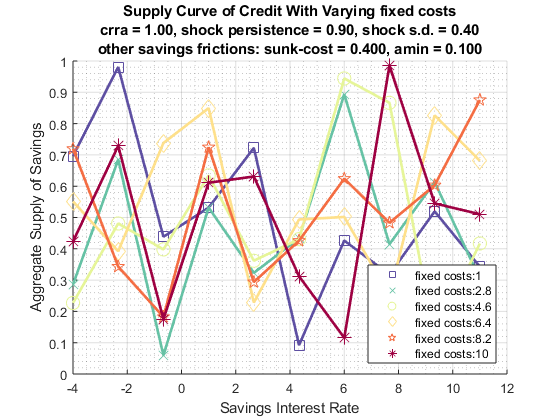
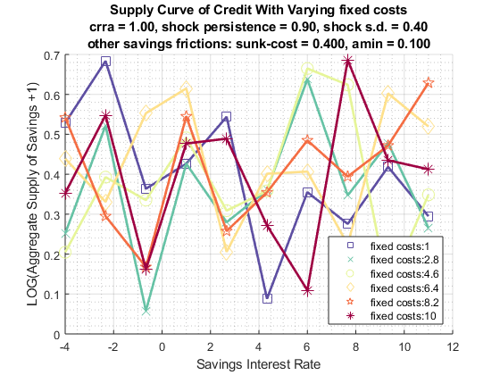

Grid based Graph, x-axis one param, color another param, over outcomes
back to Fan's Dynamic Assets Repository Table of Content.
Contents
function fsi_graph_grid(varargin)
FSI_GRAPH_GRID genereate 4 graphs
Generates graph where the x-axis is some parameter, y some outcome, and color another parameter
@param ar_color_grid array 1 by N, corresponding to the different colors, this could be fixed cost, one color a different fixed costs
@param ar_x_grid array 1 by M, corresponding to the different colors, this could be fixed cost, one color a different fixed costs
@param mt_outcome matrix N by M matrix, each row is a different color, each column matches up to the x-axis vector. Each column could be a different amin and each row a different fixed cost.
Default
if (~isempty(varargin)) % if invoked from outside overrid fully [ar_color_grid, ar_x_grid, mt_outcome, grh_sup_map] = varargin{:}; else clear all; close all; % internal invoke for testing ar_color_grid = linspace(1,10,6); ar_x_grid = linspace(-4,11,10); rng(123); mt_outcome = rand([length(ar_color_grid), length(ar_x_grid)]); grh_sup_map = containers.Map('KeyType','char', 'ValueType','any'); end
Default Map
crra = 1; ar1_z = 0.90; stderr_z = 0.40; sunkc = 0.40; amin = 0.10; st_savefric_param = 'fixed costs'; st_pref_shock = ['crra = ' num2str(crra, '%3.2f') ', shock persistence = ' num2str(ar1_z, '%3.2f') ', shock s.d. = ' num2str(stderr_z, '%3.2f')]; st_costs = ['other savings frictions: sunk-cost = ' num2str(sunkc, '%4.3f') ', amin = ' num2str(amin, '%4.3f')]; st_graph_title = {['Supply Curve of Credit With Varying ' st_savefric_param] ... [st_pref_shock] ... [st_costs]}; st_ytitle = 'Aggregate Supply of Savings'; st_xtitle = 'Savings Interest Rate'; grh_sup_map_default = containers.Map('KeyType','char', 'ValueType','any'); grh_sup_map_default('st_ytitle') = st_ytitle; grh_sup_map_default('st_xtitle') = st_xtitle; grh_sup_map_default('st_graph_title') = st_graph_title; grh_sup_map_default('st_legend_loc') = 'southeast'; grh_sup_map_default('bl_graph_logy') = true;
Override
grh_sup_map = [grh_sup_map_default ; grh_sup_map];
Parse
params_group = values(grh_sup_map, {'st_ytitle', 'st_xtitle', 'st_graph_title'});
[st_ytitle, st_xtitle, st_graph_title] = params_group{:};
params_group = values(grh_sup_map, {'st_legend_loc', 'bl_graph_logy'});
[st_legend_loc, bl_graph_logy] = params_group{:};
Generaet Graph
if (bl_graph_logy) ar_it_plot = [1,2]; else ar_it_plot = [1]; end for it_plot = ar_it_plot figure('PaperPosition', [0 0 7 4]); hold on; it_graph_counter = 0; cl_legend_mesh = []; cl_scatter_shapes = {'s','x','o','d','p','*'}; % ar_fl_clr = jet(length(param_grid)); ar_fl_clr = linspecer(length(ar_color_grid), 'sequential'); for it_color = 1:length(ar_color_grid) fl_savefric_param = ar_color_grid(it_color); fl_fc = ar_color_grid(it_color); it_graph_counter = it_graph_counter + 1; ar_color = ar_fl_clr(it_color,:); % Access Y Values ar_y = mt_outcome(it_color,:); if (it_plot == 1) ar_y = ar_y; elseif (it_plot == 2) ar_y = log(ar_y+1); end % Access X Values it_csize = 100; if (it_color <= length(cl_scatter_shapes)) st_shape = cl_scatter_shapes{it_color}; else st_shape = 'x'; end scatter(ar_x_grid', ar_y', it_csize, ar_color, st_shape, 'MarkerFaceAlpha', 1.0, 'MarkerEdgeAlpha', 1.0); line = plot(ar_x_grid, ar_y); line.HandleVisibility = 'off'; line.Color = ar_color; line.LineStyle = '-'; line.HandleVisibility = 'off'; line.LineWidth = 2; cl_legend_mesh{it_graph_counter} = [st_savefric_param,':', num2str(fl_savefric_param)]; end % Titling and Legends title(st_graph_title); if (it_plot == 1) ylabel([st_ytitle]); else ylabel(['LOG(' st_ytitle ' +1)']); end xlabel(st_xtitle); legend(cl_legend_mesh, 'Location', st_legend_loc); grid on; grid minor; snapnow; end 
end